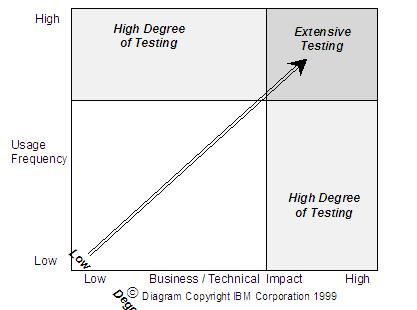

| Artifact: Static Test Plan (APP 135) |
 |
|
The Static Test Plan directs the use of static testing techniques to verify correctness and completeness of all development and test work products against predecessor work products, business and technical expertise, and organization standards. Static testing accomplishes this by:
|
| Parent Deliverables | ||
|---|---|---|
| Main Description | Static Testing detects and corrects errors close to source. The aim is to produce "defect free" work products preventing defects from passing to the next phase of the development process. Static testing is a detailed examination of the characteristics of a work product in relation to an expected set of attributes, experiences, and standards. The product under scrutiny is static (i.e., not exercised as in a module being executed). Its behavior to changing inputs and environments cannot be readily assessed. The Static Test Plan also includes any project processes (change, issue and defect management etc) available at the early stages of the project when static testing is typically executed. |
|---|---|
| Brief Outline | The Static Test Plan is a textual document containing the following headings:
They are usually defined at the project or organizational level, and this is only a reference or pointer to their whereabouts. |
There are many static testing techniques. The selection of an appropriate technique to use for a work product or deliverable is based on the level of risk, the target level of quality, and the time and resources required. Focus on placing the testing effort where it will deliver the most value. This focus is usually in parts of the system, solution, or product under test, where the risks are high usage, high business or technical impact, and hot spots. All these risk areas can be predicted or discovered during initial testing. Hot spots, in particular, are often found where requirements are not well understood because they are vaguely defined, involve new processes or technology, or are intrinsically complex in nature. Hot spots are also discovered in areas where the skill level of the participants is inadequate, or where the execution of the work product has been impacted through time and resource constraints, etc. Base the decision to static test a development work product and selection of the appropriate testing technique on risks versus cost of amelioration. The following diagram depicts the degree of testing required based on business/technical impact and usage frequency. As either increases, the level of testing increases. If both are high, extensive testing is required.  Figure 1: Degree of Testing Required Another consideration in selecting which technique to apply to a work product or deliverable is the organization’s acceptance of the value of static testing. If recognized and accepted, invest the full effort. Organizations that do not routinely use static testing may resist its use initially. It is important to drive home the value of static testing. The common perception is static testing consumes a lot of time and resources. Very often, simple static testing techniques are not considered. Oftentimes, static testing is overlooked completely. The static test plan is developed independent of a master test plan, and must be created as an integral part of the development/testing effort.
If the organization is not accustomed to static testing, it would be wise to have this document signed-off formally to
ensure support and sponsorship are available. Otherwise, the standard approval procedure for test plans on the project
and the participation of the static test team in testing the plan may be sufficient. |
| Impact of not having | Without a Static Test Plan, the likelihood of efficient and effective static testing being performed is small. Since static testing is the most cost effective form of testing, the thoughtful application of it to early project deliverables is well worth the 20% of the testing budget typically allocated for it. Therefore, it pays to take the time it takes to plan it. If no plan is or will be built, Static Test activities can be included in other project and test plans, as separate activities or as part of the work product development process. Even informal reviews of work products are better than nothing, particularly if they can hook into the issue and / or defect management processes to surface shortcomings as early as possible. |
|---|---|
| Reasons for not needing | On very small or low risk projects, especially those with standard early project deliverables, a formal Static Test Plan may not be required, though static testing techniques should be applied regardless. Some organizations may have static testing of work products built into their standard set of processes and a separate plan, therefore, may not be required. |
| Checklists | |
|---|---|
| Guidelines | |
| Supporting Materials | |
| Estimation Considerations |
| © Copyright IBM Corp. 1987, 2012 All Rights Reserved Property of IBM These materials are intended only for use as part of an IBM engagement |